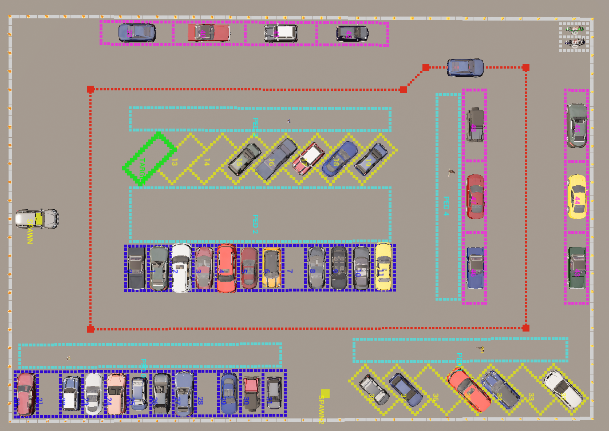
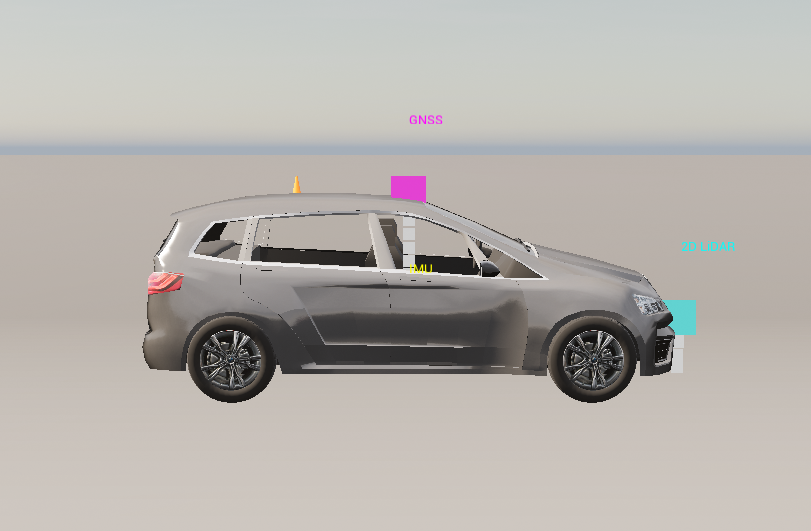
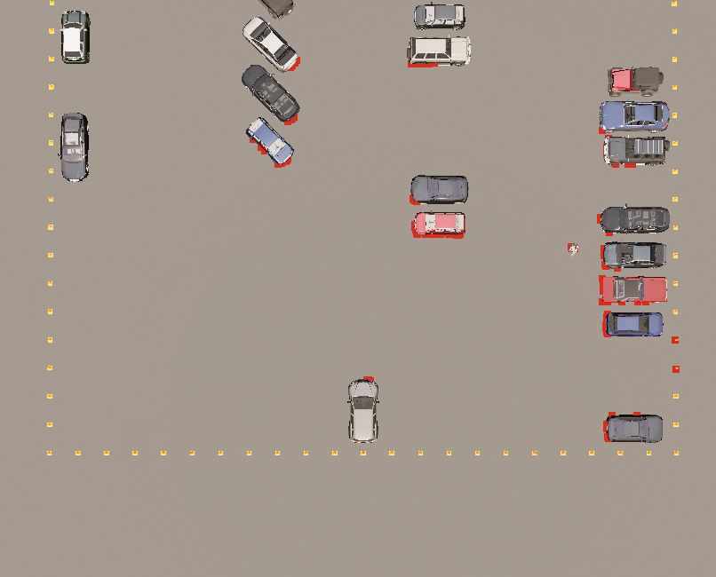
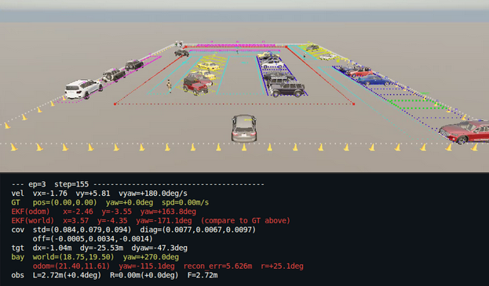
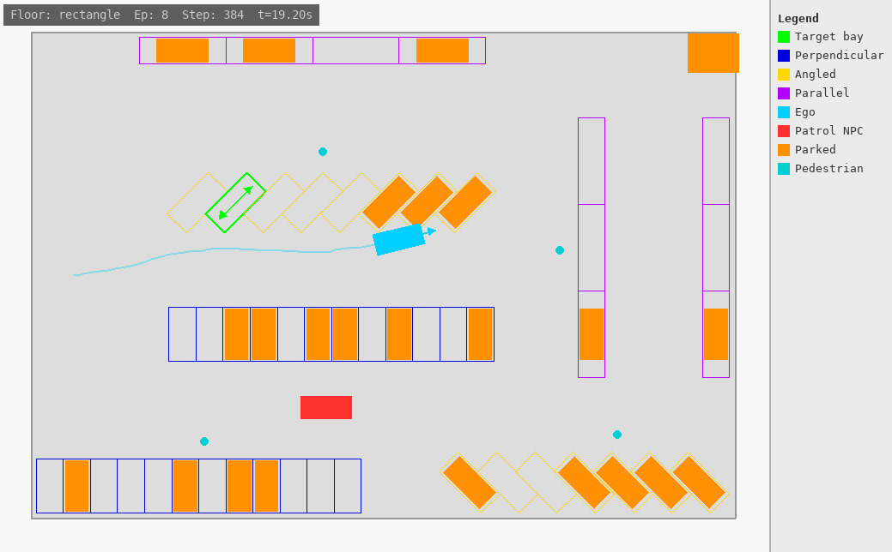

A CARLA simulation stack built around an evidential policy. Localisation uncertainty is fed in through EKF covariance, and the policy outputs two uncertainty measures that govern how the system responds under degraded conditions.
Lemonworx is investigating teleoperation as a way to supervise vehicle deployments remotely, without operators being physically on-site. If that were to scale, routine driving would need to be handled automatically, allowing one operator to potentially cover many sites. None of that is testable without a simulation to prototype against.
Prototyping will be carried out in a CARLA simulator, with tooling built on top so anyone on the team can author new layouts, validate sensor rigs, and watch experiments run without needing to touch Unreal Engine.
Three focused tools that sit on top of the simulation. All driven by the same YAML configs the sim reads, so nothing can silently drift out of sync.
Describe a parking lot in local frame and get the YAML the sim consumes plus a bird's-eye PNG. No CARLA required to author a new lot.
One script, four modes. Answer every pre-flight question before committing to a training run.
A detachable bird's-eye window on the host. The sim stays headless. Attach when you want to watch, close when you are done.
Each mode answers a specific question before a training run starts, the kind of question that otherwise shows up two hours in if the required precautions are not taken.
Full lot in windowed CARLA. Bay outlines colour-coded by type, target in green, pedestrian zones outlined, patrol waypoint path traced.
Ego spawned, IMU, GNSS and LiDAR dots drawn at their configured mount points Bird's-eye, side, or front view.
Real 2D LiDAR spawned on the ego vehicle. Every scan return renders as a red debug dot in the CARLA world. You can literally see the detection envelope.
Full training pipeline with random or keyboard actions and no model. Every surface exercised before training starts: env, sensor fusion, observation construction, reward.
The layout overlay colour-codes every bay by type and marks the target in green. The sensor rig reads mount positions from the same YAML the sim uses, so the two cannot drift apart.


The left panel shows a live LiDAR scan: the red dots are real returns in the CARLA world, not an illustration. The right shows the dry-run terminal output allowing cross reference with ground truth.


A detachable bird's-eye viewer running on the host while the sim stays headless in Docker. It reads a trace file only while the window is open, so there is no overhead when you are not watching. Closing the window saves an MP4 of the full run automatically.

The standard Gaussian actor head is replaced with a Normal-Inverse-Gamma output layer. For each action dimension the network produces four parameters and two uncertainty types fall out in closed form at no extra inference cost. Varying EKF covariance input drives both outputs.
Model uncertainty. Rises when the policy encounters unfamiliar situations, such as a lot geometry not seen during training. A high reading is the signal to drive more conservatively.
Irreducible noise. Rises when degraded GNSS makes the correct action genuinely ambiguous regardless of training. This is the trigger for a remote operator handoff.
The simulation stack, the inspector tooling, and the evidential policy are all in place. What remains is putting the uncertainty outputs to work and making sure the team can carry this forward independently.